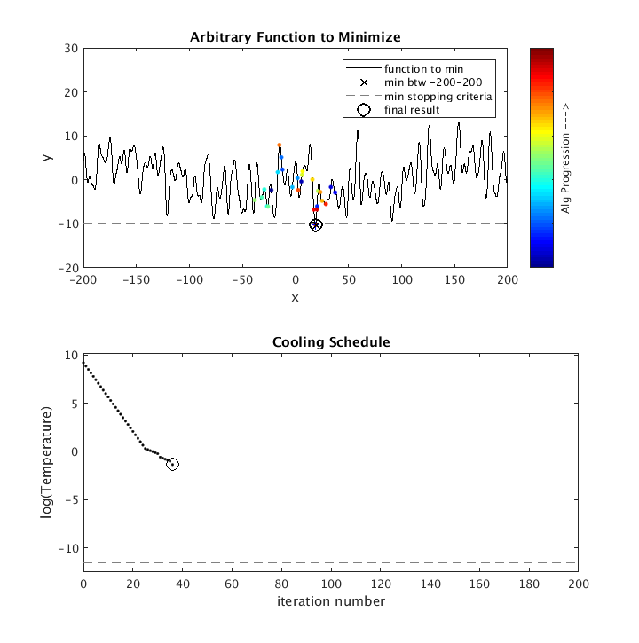

close all;
clear;
x = sym('x');
s = sin(x);
for i = 1:20
a = rand(1);
b = randn(1);
c = randn(1);
d = rand(1);
s = s + a.*sin(b*x) + c.*cos(d*x);
end
s = s+(abs(x)./30)-3;
x = -200:0.1:200;
xa = x;
ss = eval(s);
[m,d] = min(ss);
x = -50;
xo = x;
eo = eval(s);
nT = 1e4;
nits = 200;
Tstop = 1e-5;
eStop = -10;
figure('units', 'normalized', 'outerposition', [.1 .1 .5 .9]); hold on;
hold on;
subplot(2,1,1);
hold on; box on;
plot(xa, ss, 'k');
plot(xa(d),m, 'kx', 'linewidth', 2);
plot(xa, ones(1, length(xa)).*eStop, '--', 'color', [0.5 0.5 0.5]);
xlabel('x');
ylabel('y');
title('Arbitrary Function to Minimize');
ylim([-20 30]);
subplot(2,1,2);
hold on; box on;
plot(0, log(nT), 'k.');
xlabel('iteration number');
ylabel('log(Temperature)');
title('Cooling Schedule');
xlim([0 nits]);
ylim([log(Tstop)-1 log(nT)+1]);
plot(0:nits, ones(1, nits+1).*log(Tstop), '--', 'color', [0.5 0.5 0.5]);
nTa = [];
eoa = [];
xoa = [];
for i = 1:nits
nr = randn*20;
x = xo+nr;
ei = eval(s);
f = exp(-(ei-eo)./nT);
rr = rand;
if f >= rr
eo = ei;
xo = x;
nT = 0.7*nT;
eoa = [eoa; eo];
xoa = [xoa; xo];
else
nT = 0.9*nT;
end
nTa = [nTa; nT];
if nT <= Tstop | eo < eStop
itStop = i;
break
else
itStop = i;
end
end
subplot(2,1,1);
plot(xo, eo, 'ko', 'markersize', 10, 'linewidth', 2);
ll = length(eoa);
cm = jet(ll);
for i=1:ll
plot(xoa(i), eoa(i), '.', 'color', cm(i,:), 'markersize', 10);
end
plot(xo, eo, 'b*');
plot(xa(d),m, 'kx', 'linewidth', 2, 'linewidth', 2);
colormap jet
h = colorbar;
set(h, 'TickLabels', ['']);
h.Label.String = 'Alg Progression --->';
legend('function to min', 'min btw -200-200', 'min stopping criteria', 'final result');
subplot(2,1,2);
plot(1:itStop, log(nTa), 'k.');
plot(itStop, log(nT), 'ko', 'markersize', 10);
